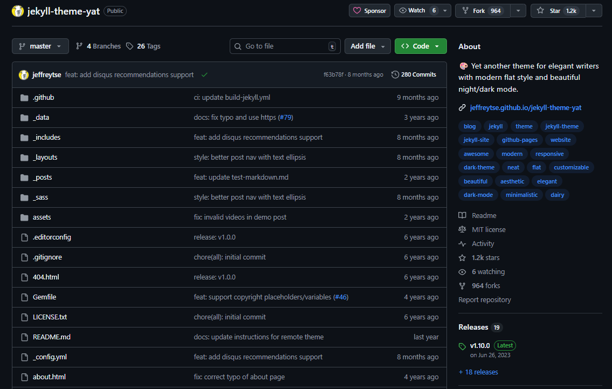
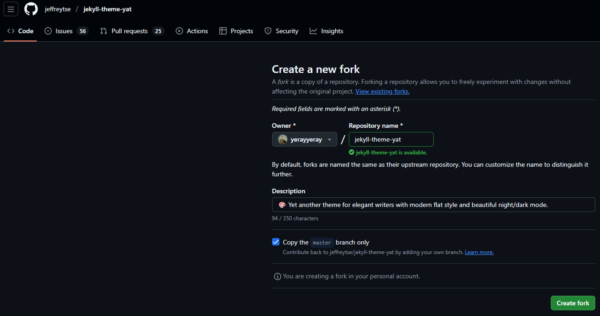
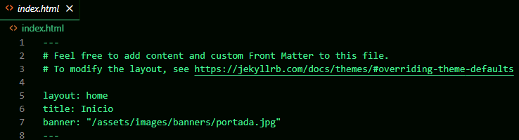
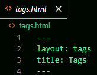
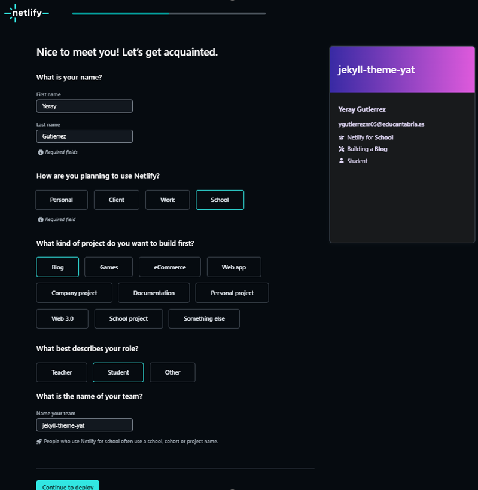
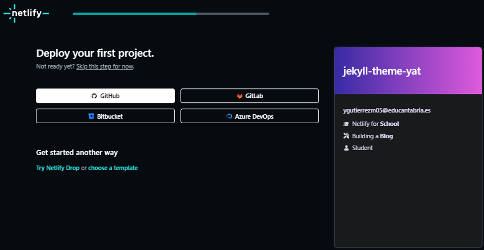
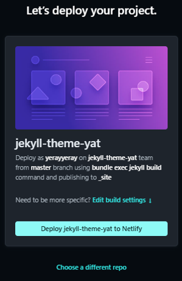
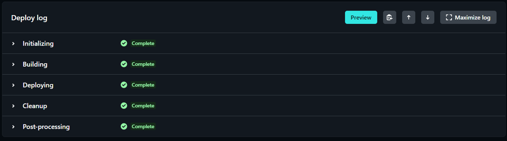
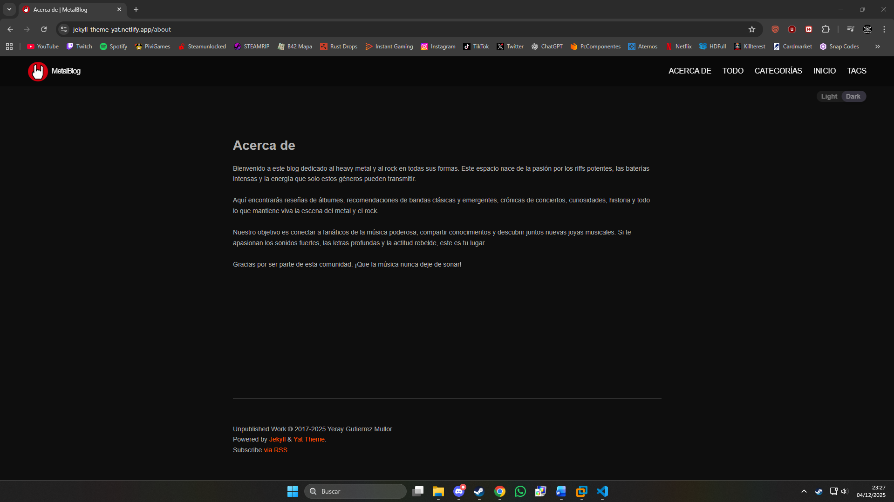
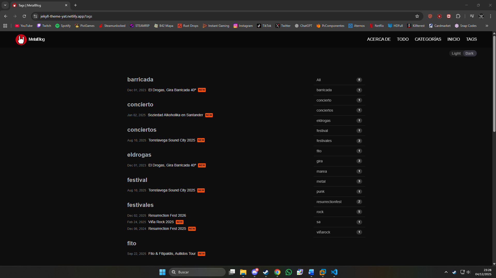

Ejercicio 3: Elegir un tema de Jekyll y desplegar el sitio en Netlify
1. Buscar un tema de Jekyll:
Para buscar un tema de Jekyll, hay que ir a la pagina jekyllthemes.org

Yo he elegido el tema Yet Another Theme (YAT)

2. Obtener el tema:
Hacer fork del repositorio con el tema
Este es el repositorio al que hacer fork


Clonarlo en local
Clonarlo en la maquina local

3. Configurar el sitio:
Configurar el archivo _config.yaml

4. Personalizar el sitio:
Inicio:
Para configurar la pagina de inicio del sitio, modificar el archivo index.html; Aquí solo he cambiado la imagen de fondo para la pagina de inicio

Acerca de:
Aqui se personaliza la pagina de "Acerca de" en la que viene la información acerca de la pagina y su autor

Todo:
En esta pagina se muestran todos los posts organizados por la fecha de subida, esto ya viene programado con el tema y no hay que hacerlo a mano

Categorías:
En esta pagina se muestran todas las categorias con sus respectivos posts, esto ya viene programado con el tema y no hay que hacerlo a mano

Tags:
En esta pagina se muestran todas los tags con sus respectivos posts, esto ya viene programado con el tema y no hay que hacerlo a mano

Posts:
Para crear los posts, hay que ir a la carpeta '_posts'

Dentro de la carpeta se crearán los post como archivos de markdown con el formato de nombre año-mes-dia-nombre_del_post como por ejemplo:

5. Subir el sitio a GitHub:
Antes de subir el repositorio primero hay que hacer los commits de todos los cambios que se han hecho en el repositorio si aún no se han hecho con los comandos:
git add .
git commit -m "comentario"
Despues, se hara el push con el comando:
git push origin main
6. Desplegar el sitio en Netlify:
Para subir el sitio a Netlify, hay que dirigirse a la pagina netlify.com

Iniciar sesion en GitHub

Autorizar el acceso

Crear el proyecto

Elegir donde esta el repositorio del sitio web

Seleccionar el repositorio del sitio

Desplegar el sitio

Esperar a que se complete el despliegue

Cuando el sitio termine de desplegarse, ya se podra acceder a traves de la url

7. Sitio web subido en GitHub Pages:
La url de la pagina es esta:
https://jekyll-theme-yat.netlify.app
Este es el aspecto que tiene el sitio web ya subido en GitHub Pages:
Inicio:

Acerca de:

Todo:

Categorías:

Tags:

Posts:
Post 1

Post 2

Post 3

Post 4

Post 5

Post 6

Post 7